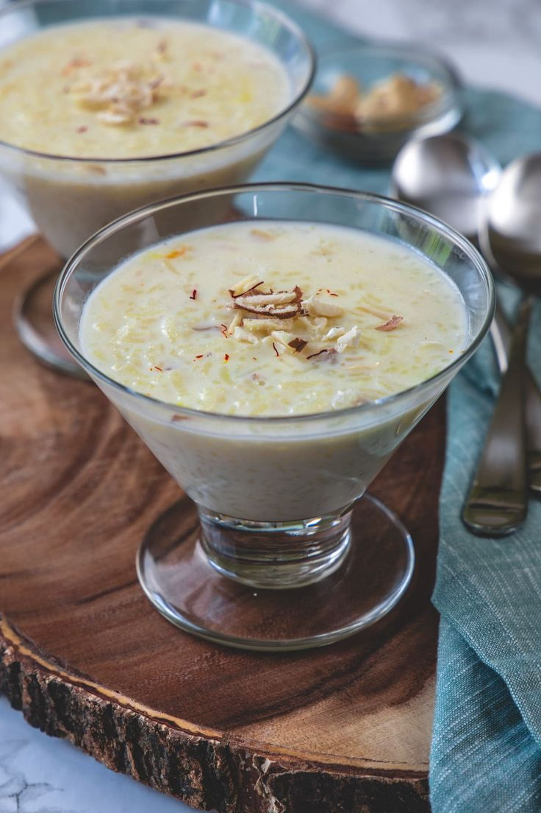
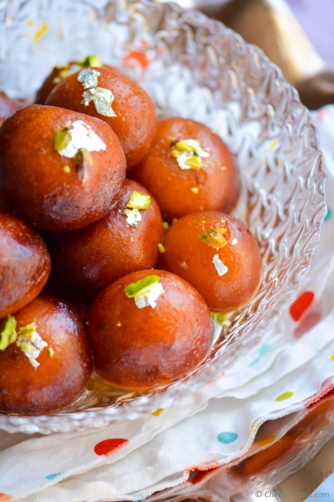
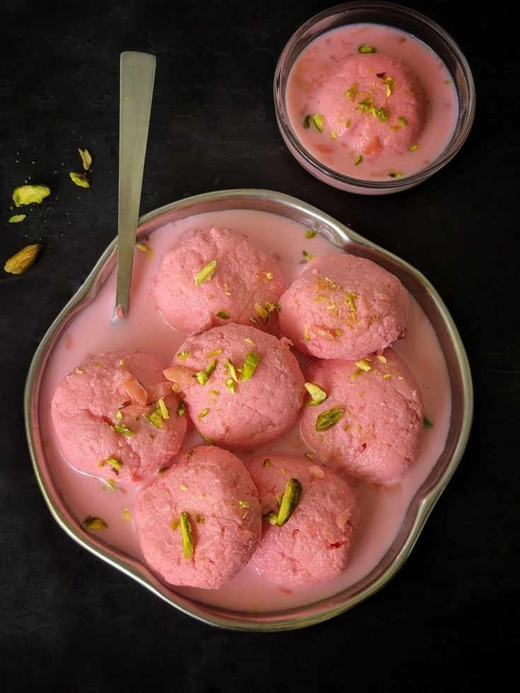

Welcome to Dessert World
Discover the best desserts from around Pakistan!
Learn MoreFeatured Desserts

Kheer
A creamy rice pudding, sweetened and flavored with cardamom and garnished with nuts.

Gulab Jamun
Soft, syrup-soaked dough balls, rich with rose and cardamom flavor.

Ras Malai
Delicate paneer dumplings soaked in sweetened milk with saffron and nuts.
Watch a Traditional Pakistani Dessert Tutorial
Check out this amazing video from a popular Pakistani YouTuber on how to make some of these delicious desserts at home!